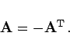
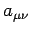
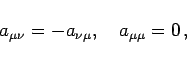
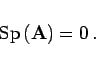
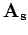
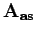
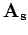
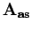

Antisymmetrische Matrizen oder schiefsymmetrische Matrizen sind quadratische Matrizen  mit der Eigenschaft:
mit der Eigenschaft:
|  | (4.13a) |
Für die Elemente  einer antisymmetrischen Matrix gilt
|  | (4.13b) |
so daß die Spur einer antisymmetrischen Matrix verschwindet:
|  | (4.13c) |
Elemente, die spiegelbildlich zur Hauptdiagonale liegen, unterscheiden sich nur durch ihr Vorzeichen.
Jede quadratische Matrix  kann in eine Summe aus einer symmetrischen Matrix  und einer antisymmetrischen Matrix  zerlegt werden:
kann in eine Summe aus einer symmetrischen Matrix  und einer antisymmetrischen Matrix  zerlegt werden:
 |
(4.13d) |